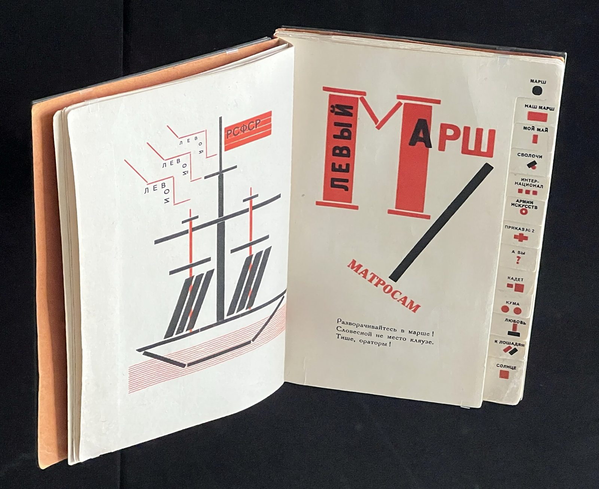

References / Book / 163
Dlia golosa (For the Voice)
El Lissitzky’s design for thirteen poems by Vladimir Mayakovsky builds letters, bars, and a ship from type material in red and black, with a thumb index to find each poem.
- Source
- Josef Chladek: Dlia golosa (For the Voice), Gosizdat / Lutze and Vogt, 1923
- Creator
- El Lissitzky (design), Vladimir Mayakovsky (poems)
- Made
- 1923
- Style
- Constructivism (agent-proposed, not yet reviewed by a person)
- Moods
- Typographic, rhythmic, agitational
- Evidence
- Downloaded and inspected a photograph of an open copy on display at the Deutsches Buch- und Schriftmuseum, Leipzig, published by Karl432 on Wikimedia Commons (2816 × 2300 px, viewed at 1920 px). The photograph shows one spread, the opening of “Left March”. Other spreads are known only from the Commons category Dlia Golosa, which was not inspected page by page.
- Reviewed
- Rights
- Open license, stored. License: CC0-1.0. Rights policy

Context
The book collects thirteen of Mayakovsky’s poems for reading aloud. It was published by Gosizdat (the State Publishing House) in Berlin in 1923 and printed by Lutze & Vogt; it has 61 pages and measures about 13 × 19 cm. Josef Chladek.
Lissitzky added a thumb index so that a reader could find a poem quickly. He compared his role to “an accompanying piano to a violin”. Josef Chladek.
The Leipzig museum shows the book as an example of “Elementare Typografie”. Commons.
Observed
- The left page shows a sailing ship drawn from black and red rules and bars. A red flag reads “РСФСР”, and the word “ЛЕВ” repeats on stepped red lines above it.
- The right page opens “ЛЕВЫЙ МАРШ” (Left March). Two red slabs with black rules form a giant letter М; “ЛЕВЫЙ” runs vertically in black capitals inside the first slab.
- A thick black bar runs diagonally from upper right to lower center. “МАТРОСАМ” (to the sailors) runs on a diagonal beside it in red serif capitals.
- The first lines of the poem are set small in a black serif text face.
- The thumb index along the right edge gives each poem a title in small black sans-serif capitals and a symbol in red or black: a dot, a square, a cross, a question mark, two circles.
- The paper is off-white. The only colors are red and black.
Why it belongs
The spread shows that constructivist heavy capitals and bars came first from the type case: letters and pictures are built from the same rules and blocks.
Body text stays small and horizontal while display words rotate, which matches the style rule not to rotate body text.
Borrow
Build a large initial letter or a simple picture from thick rules and blocks in red and black.
Give each section a short symbol and use the symbols as a visible index or tab bar.
Pair one steep black bar with a heading set on the same angle.
Measured
Machine-extracted by tools/image-traits.py on . Full measurement.
- Mean chroma
- 0.07
- Palette
- #222529 24%
- #c9c3b3 23%
- #f1f3ee 21%
- #131418 13%
- #d2cec1 5%
- #c14944 2%
- #646365 2%
- #a88f79 1%

